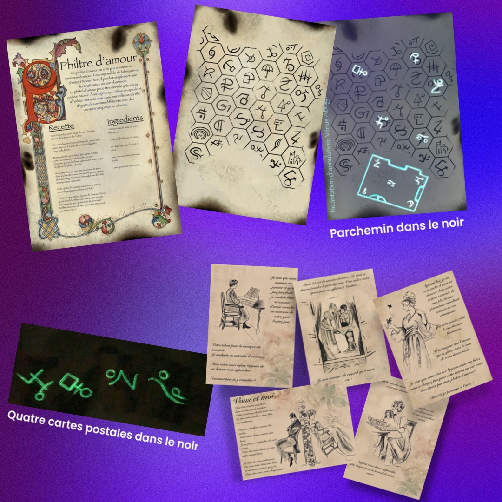
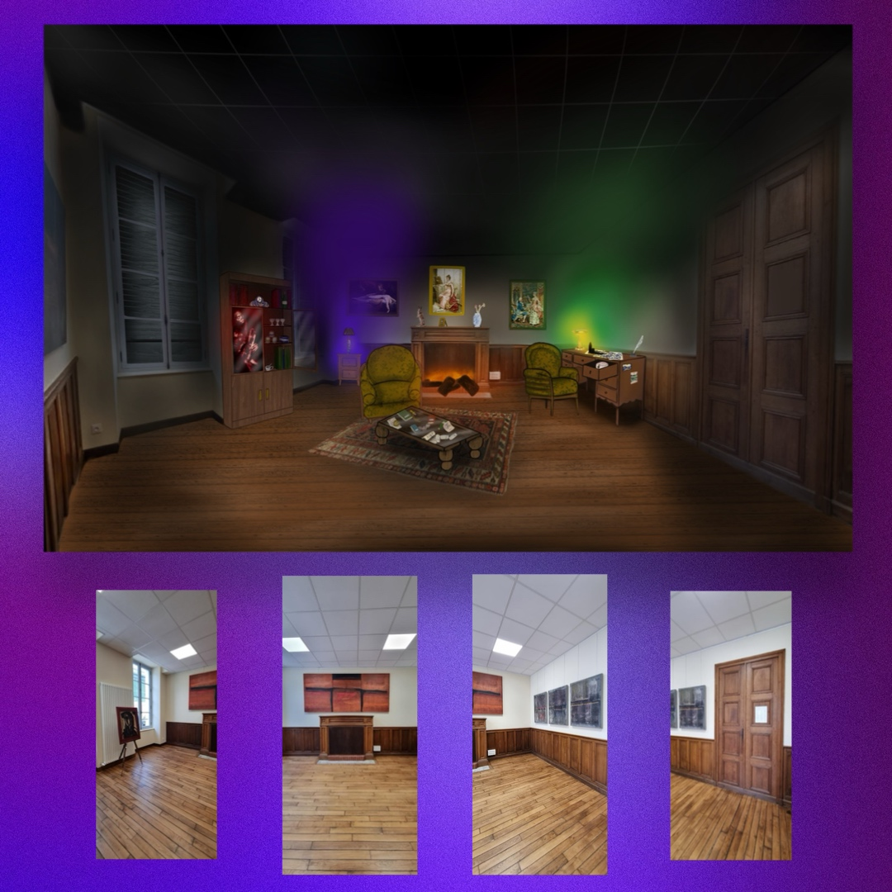
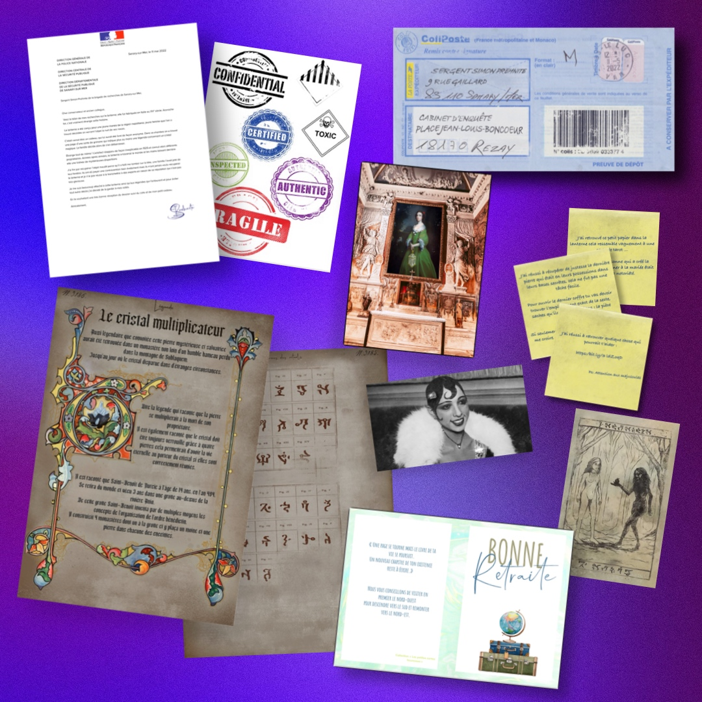
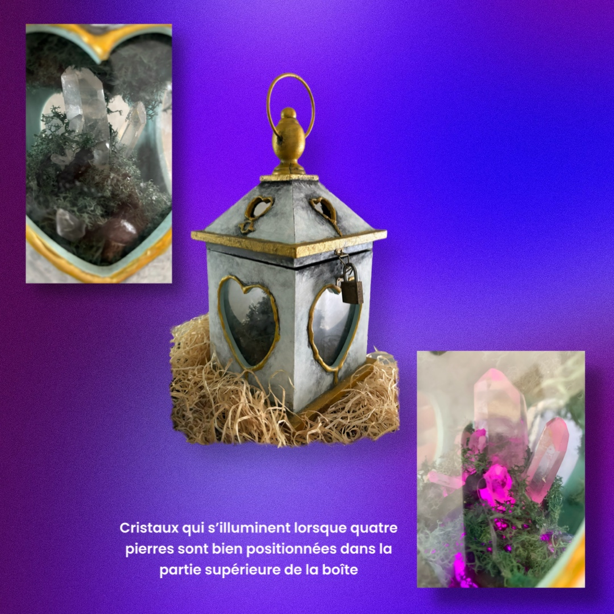
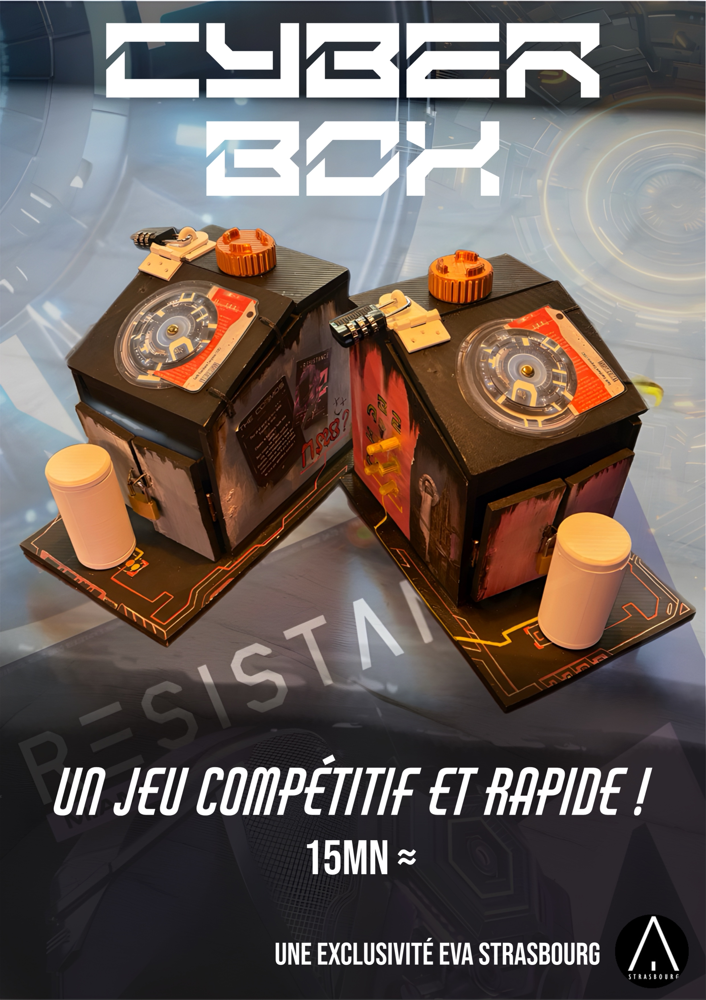

Nos projets immersifs
Chaque expérience est une passerelle entre le réel et l’imaginaire.
LA MALÉDICTION DE MONSIEUR BRISEBARD



Dans une vieille demeure léguée par vos ancêtres, une malédiction plane. Inspiré de faits réels, ce jeu plonge les joueurs dans une enquête sombre, au cœur même du lieu où tout s’est déroulé.
Commandé par la ville de Tonnerre, cet escape game temporaire a été conçu pour faire vivre un lieu historique autrement.
Plus de 300 enquêteurs en moins de 3 mois. Une aventure qui allie patrimoine, jeu et immersion. Et vous, auriez-vous osé entrer chez Brisebard ?
DESTINY BOX : Le Secret de la Lanterne



Une étrange boîte contenant une lanterne maudite refait surface. Pour percer ses secrets, il faudra manipuler ses mécanismes, observer chaque détail, et plonger dans une histoire sombre ponctuée de sons, vidéos et révélations.
Cette aventure transportable se joue en petit groupe avec smartphone en main, dans une ambiance captivante et progressive.
Le Conceptarium a imaginé le scénario, les éléments interactifs, la narration, les objets réalistes et tous les supports de jeu. Ouvrirez-vous la lanterne… ou réveillerez-vous sa malédiction ?
CYBER BOX

Dans un futur dévasté, une plante miraculeuse pourrait sauver l’Humanité. À vous de déchiffrer les secrets d’une boîte codée pour empêcher l’irréparable.
Créée pour EVA Strasbourg, cette expérience de 15 minutes oppose deux équipes ou peut se jouer en solo. Un format rapide, nerveux et visuellement marquant, pensé pour les événements et les lieux de passage.
Parviendrez-vous à libérer le remède… avant qu’il ne soit trop tard ?